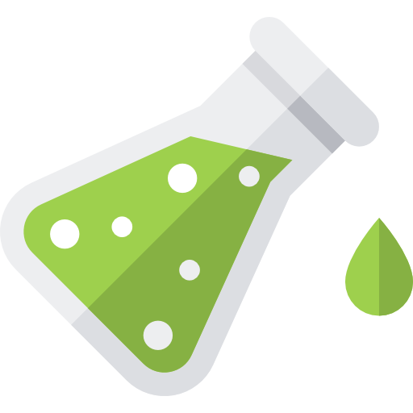

Chemdy-Sistem Koloid
www.chemdy.my.id
Chemdy adalah sebuah paket program pembelajaran kimia.
Chemdy dikembangkan oleh Surya AWS dengan cordova dan framework7.
Chemdy adalah sebuah paket program pembelajaran kimia.
Chemdy dikembangkan oleh Surya AWS dengan cordova dan framework7.